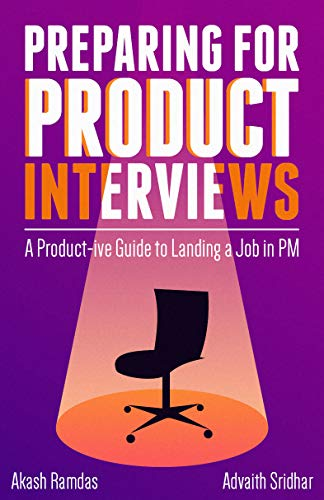
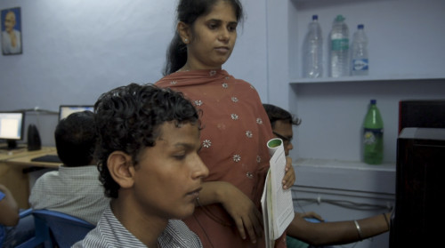

I co-authored a book to help students and professionals switch into Product Management roles. It is available on Amazon, Flipkart, Google Play and Apple Books. The book is free for students, and has been downloaded over 4,000 times on various forums by students and professionals alike.
User feedback on the book (verbatim):
- Great book. Really lucid writing and simple approach to demonstrate complex concepts.
- One of the best guides I found for my preparation! Very informative, gives a good insight of the role.
I have won 19 inter-hostel & inter-college competitions in theatre, public speaking and other events. I have also directed and participated in several plays, including one ticketed play. Apart from participating, I was also elected hostel Literary secretary by 350+ students to lead my hostel (Godavari) in all intra-college literary activities.

I launched India’s first python programming online course for visually impaired people. We took content from MIT's OpenCourseWare, and taught Python programming to 32 blind students over 4 months. We also organized a Hackathon for the Visually Impaired at the end of the course – India’s first programming contest for visually impaired people. The event was done in collaboration with the central government's Accessible India campaign.
I was chosen from 1,300 applicants around the world to take part in a hackathon conducted by FC Bayern Munich and Technical University Munich. There, we designed a Computer Vision system that capture people's emotions as they watched football matches, and combined it with corresponding footage from the match, thus creating personalised match highlights for each person.
I was selected by IIT-Madras to observe parliament sessions and interact with various high-profile ministers, with the goal of better understanding the role IITians could play in forming policy. Ministers we met include Vice President Venkaiah Naidu, former HRD Union Minister Prakash Javadekar, MP Shashi Taroor and former MP Baijayant Panda, amongst others.